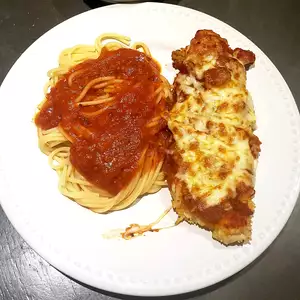

Simple Chicken Parmesan

Description
Simple Chicken Parmesan is the perfect dish to lure kids into the kitchen
- what kid doesn't like chicken tenders and spaghetti? And this dish is
loaded with mini cooking lessons. With one simple recipe, kids learn how
to boil pasta, mince garlic, grate cheese, make tomato sauce, and pound,
bread and saute cutlets. Bonus: This recipe makes twice the sauce needed,
so freeze half for another meal.
Ingredients:
- 2 medium garlic cloves, peeled and crushed
- 1 (28 ounce) can crushed tomatoes (quality varies dramatically; I prefer Redpack, Progresso and Muir Glen brands)
- 2 tablespoons extra-virgin olive oil
- ½ teaspoon dried basil
- ¼ teaspoon dried oregano
- ¼ teaspoon sugar
- Salt and freshly ground pepper, to taste
- 2 large boneless, skinless chicken breasts (6 to 8 ounces each), halved crosswise
- 1 large egg
- ½ cup dry bread crumbs
- 8 ounces spaghetti or linguine
- ¼ cup extra-virgin olive oil
- ½ cup grated part-skim mozzarella cheese
- ¼ cup grated Parmesan cheese, plus extra for passing at the table
Steps:
- In a large saucepan, heat garlic and 2 Tbs. oil over medium-high heat until garlic
starts to sizzle. Stir in tomatoes, basil, oregano, sugar, a pinch of salt and a few
grinds of pepper. Bring to a simmer; simmer until sauce thickens a bit and flavors meld,
10 to 12 minutes. Cover and keep warm. (Remember, this makes twice the amount of sauce
you need, so put aside half for another meal.)
- Put chicken pieces between two sheets of plastic wrap and pound, using your fists or a heavy pan, until the cutlets are about 1/4-inch thick.
- Bring 2 quarts of salted water to a boil in a large soup kettle.
- In a pie pan, beat egg until well-blended. In another pie pan, mix bread crumbs and more black pepper. Preheat broiler.
- Working one cutlet at a time, dip both sides of each in beaten egg, then in bread crumbs. Put cutlets on a wire rack set over a cookie sheet (this step helps breading stay put).
- Heat remaining 1/4 cup oil over medium-high heat in a 12-inch skillet. When oil starts to shimmer, add cutlets and saute until golden brown on each side, about 5 minutes total. Wash and dry the wire rack and return to cookie sheet. As the cutlets saute, cook pasta in boiling water according to package directions.
- Transfer cutlets to clean wire rack over cookie sheet. Top each with a portion of the cheeses. Broil cutlets, 4 to 5 inches from heat source, until cheese melts and is spotty brown.
- Drain pasta. Put a cutlet and a portion of pasta on each of 4 plates. Spoon 2 or 3 tablespoons of sauce over part of each cutlet, then sauce the pasta as desired. Serve with extra Parmesan.